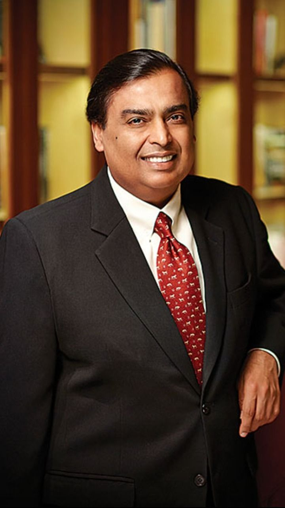
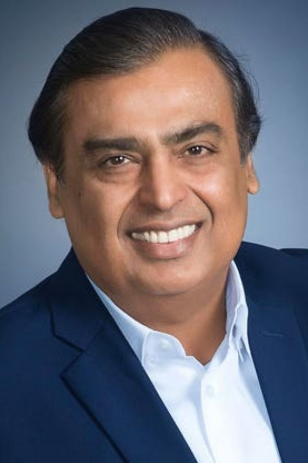
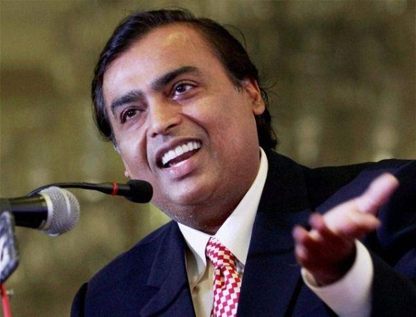
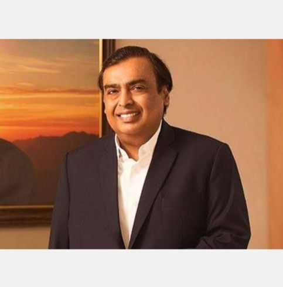

AMBANI

BUSSINESSMAN AMBANI
HIS ACHIEVEMENTS



Mukesh Ambani is one of the most prominent business figures in India and globally, known for his leadership of **Reliance Industries Limited (RIL)**, a conglomerate with interests in petrochemicals, refining, oil & gas, telecommunications, retail, and more.
### Quick Facts about Mukesh Ambani:
* **Full Name:** Mukesh Dhirubhai Ambani
* **Born:** April 19, 1957, in Aden, Yemen
* **Education:** Attended the University of Mumbai and later Stanford University (did not complete the MBA)
* **Position:** Chairman and Managing Director of Reliance Industries
* **Net Worth:** Consistently ranks among the top richest people in the world (over \$100 billion as of 2024, depending on market conditions)
---
### Key Contributions:
#### 1. **Reliance Industries Expansion**
* Originally founded by **Dhirubhai Ambani** (his father), Reliance started as a textile company.
* Mukesh played a key role in expanding into **petrochemicals, oil refining**, and later **telecommunications and retail**.
#### 2. **Jio Revolution**
* In 2016, **Reliance Jio** disrupted the Indian telecom market by offering ultra-cheap data and free voice calls, leading to a data revolution in India.
* It forced competitors to slash prices and reshaped the digital ecosystem.
#### 3. **Retail Domination**
* Through **Reliance Retail**, he has built one of India’s largest retail chains, spanning groceries, fashion, and electronics.
* It competes with Amazon and Flipkart in India’s fast-growing e-commerce market.
---
### Personal Life:
* Married to **Nita Ambani**, a philanthropist and businesswoman involved in education, arts, and sports (she is a major force behind the **Dhirubhai Ambani International School** and **Mumbai Indians IPL team**).
* Children: Akash, Isha, and Anant Ambani – all actively involved in various arms of Reliance.
---
### Legacy & Influence:
* Ambani has redefined how Indian businesses scale up and integrate across sectors.
* Known for his futuristic bets—especially on data, green energy, and retail.
* He is also heavily invested in **renewable energy** and **technology platforms**, positioning Reliance for the next decade.
Would you like details on a specific area—like Jio, his children, recent ventures, or controversies?
know about him
Back to mainpage
learn more about actor Ambani